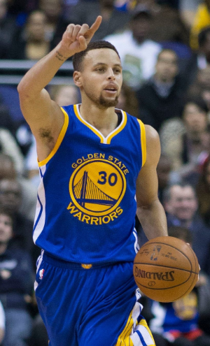

バスケ

私の1つ目の趣味はバスケです。
中学の頃バスケ部に入り、高校ではやめたものの大学に入り、
また社会人バスケで練習に励んでいます。
左の選手はワーデル・ステフィン・カリー2世（Wardell Stephen Curry II）と言って
NBAでとても活躍している選手です。
カリー最大の特徴は、NBAの歴史という観点から見てもずば抜けた3ポイントシュート能力、
優れたボールハンドリング技術でシュートスペースを作りだし、極度に省略化されたシュートフォームで
高確率の3ポイントシュートを沈める。
従来のシューターは味方のアシストやスクリーンを利用して、オープンになった状態で
3ポイントシュートを撃つが、カリーはシュートセレクションなどお構いなしに、
通常のジャンプシュートと同じような感覚で撃ちます。通常では考えられない頻度とタイミングで
放たれるシュートは相手ディフェンスにとってはまさに脅威です。
相手マークが付いている状態でのタフショットをものともせずシュートを決め、ディフェンスが警戒していない3ポイントラインの数メートル後ろからシュートを放つこともしばしばあり、クォーター終わりにハーフコートラインからシュートを決めることも珍しくないのです。
私の中の一番の選手です。